Обзор
В этом уроке вы познакомитесь с процессом создания простейшего растительного актива; участки травы. В нем рассматриваются основы параметров шейдера растительности и знакомится с редактором растительности в CRYENGINE. «Заплатки травы» — это предыдущий метод, который мы использовали для создания ресурсов травы для ENGINE. Несмотря на то, что этот метод по-прежнему актуален и его стоит знать, мы предпочитаем использовать технологию Merged Mesh (MM).
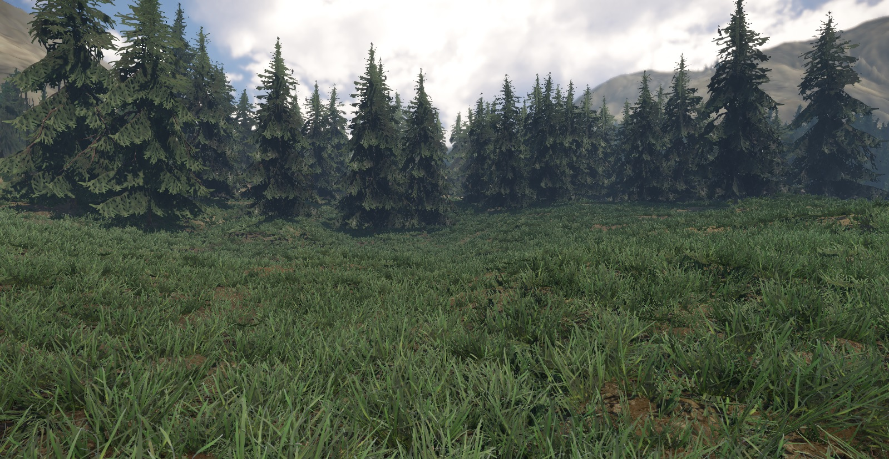
Рис1: Готовая сцена с использованием участков травы.
Пример ниже (Рис2) изображает создание участков травы с помощью редактора растительности. Тот, что справа, показан в виде выделенных плоскостей.

Рисунок 2: Травяные объекты в обычном и выделенном виде плоскостей.
Учебные файлы
Исходная сцена 3dsMax с экспортированными файлами CRYENGINE:
Предварительные требования для этого урока
Прежде чем продолжить изучение этого руководства, обязательно прочтите и усвойте следующие темы:
- Как установить CryMaxTools
- Базовый рабочий процесс CRYENGINE 3dsMax
- CRYENGINE Экспортер
- Масштаб единиц измерения 3dsMax соответствует системе единиц измерения CRYENGINE.
Полезная информация
При работе над активами помните следующее:
- Обычно версии объединенной сетки и травы не требуют физического прокси.
- Если вы включите трава в параметрах генерации шейдеров, то карта нормалей (оптимизация) вам не нужна.
- Каждый размещенный участок травы имеет свой собственный набор вызовов отрисовки. Объединенная сетка травы этого не делает — она объединяет куски вместе.
- Не превышайте диаметр 8 метров для больших участков травы. Этот размер доказал, что обеспечивает хороший баланс между производительностью и покрытием поверхности.
- Используйте как можно меньше полигонов при создании повторяющегося объекта, такого как трава. Это значительно улучшит производительность.
- Добавьте LOD в актив. Уменьшите количество полигонов на 50 % (если возможно) на каждом шаге LOD.
Первоначальная настройка 3dsMax
Для этого урока ресурс был создан в следующем каталоге:
<Your_Project>\Assets\Objects\tutorial\vegetation\01\grass_patch\
- Для начала сохраните 3dsMax сцену в это место.
- Все экспортированные ресурсы также будут сохранены в этом каталоге.
- Некоторые текстуры, используемые в этом уроке, являются производными от существующих ресурсов. В этом случае мы укажем вам каталог, в котором они хранятся далее в этом руководстве.
Материал
Изначально нам необходимо подготовить материал, который будет нанесен на объект. Это позволяет нам предоставить визуальную ссылку на текстуру, которую вы используете при моделировании или формировании геометрических плоскостей участка травы. Для отдельной травы и участков травы вам понадобится только один материал. SubID для видимой части сетки. Кроме того, для объекта не требуется физический прокси, поскольку игрок должен беспрепятственно проходить прямо через объект.
К объекту можно добавить прокси, но для участков с травой это не рекомендуется.
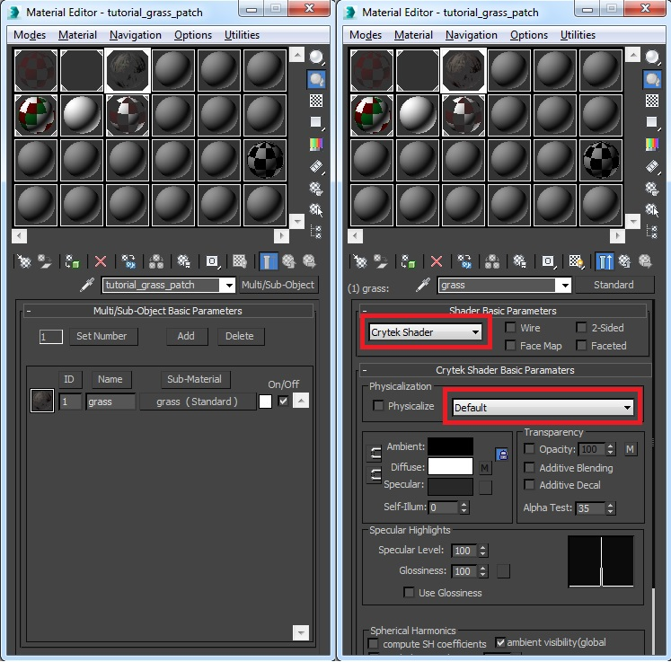
Рис.3: Настройка материала в 3dsMax, слева — верхний уровень мультиматериала, справа — свойства SubID.
Настройки по умолчанию для свойств SubID в Material Editor
- На скриншоте (Рис3) сверху, справа, обратите внимание под Основные параметры шейдера что Крайтек Шейдер был выбран из раскрывающегося списка.
- В Крайтек Основные параметры шейдера раздел, По умолчанию был выбран из раскрывающегося списка.
- Поскольку мы не физизируем объект, Физически флажок имеет нет был проверен.
Чтобы цвета Diffuse и Specular соответствовали модели PBS, они устанавливаются следующим образом:
- Диффузный = 255 255 255
Зеркальное отражение в диапазоне 40,40,40 -> 60,60,60.
Файл примера относится к следующей текстуре, которая уже имеется в сборке. Ссылка на это на карте Diffuse Color:
<Your_Project>\Assets\Objects\natural\ground\grass\textures\grass_mix_diff.tif>
Мы не добавляем карту нормалей (ddna). Это сделано намеренно, поскольку мы хотим, чтобы наш травяной актив был как можно дешевле, и мы достигаем этого, позволяя трава флаг в Параметры шейдера раздел. трава flag запускает шейдер через более дешевый конвейер, и основным преимуществом этого является то, что ему не нужна карта нормалей.
Хоть вы и сможете добавить его, но он не будет использоваться. Следовательно, это пустая трата, если трава тикает в Генерация шейдеров параметры.
Экспортируйте материал
Теперь мы настроили материал для объекта с помощью одного SubID.
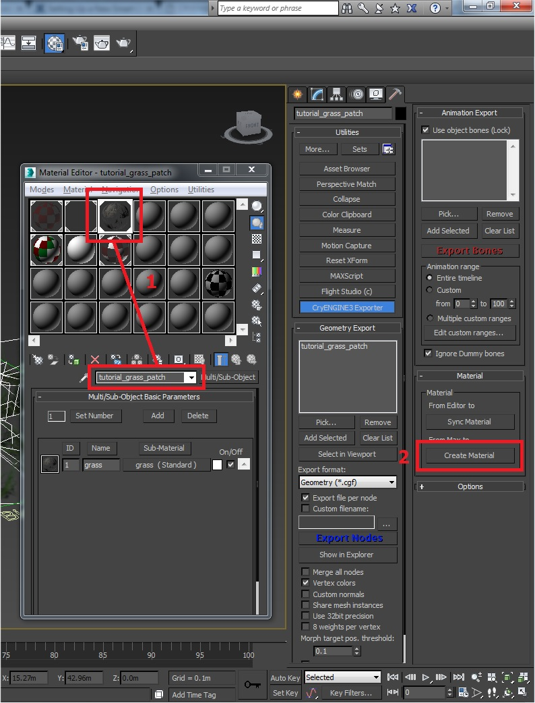
Рис.4: Выбор верхнего уровня материала (не SubID) для экспорта.
Убедитесь, что вы соблюдаете следующие предварительные условия:
- Убедитесь, что в списке выбран правильный материал. Material Editor (вы должны находиться на корневом уровне материалов, а не внутри SubID).
- В CRYENGINE Экспортер вкладку, нажмите кнопку Создать материал кнопка. Сохраните это в том же каталоге, что и объект:
<tutorial_grass_patch.mtlYour_Project>\Assets\Objects\tutorial\vegetation\01\grass_patch\
Настройка объекта
Для участка травы мы определяем объект серией простых плоскостей, повернутых в случайных направлениях и с вариациями масштаба, чтобы добиться плотного вида с минимальной геометрией. Идея состоит в том, чтобы он выглядел цельным со всех сторон, например, в направлении X, Y и Z.
Шаги по настройке объекта:
- Создайте полигональную плоскость и примените материал. tutorial_grass_patch к этому.
- Убедитесь, что для SubID установлено значение ID 1.
- Назовите полигональный объект tutorial_grass_patch.
- Используйте Развернуть модификатор UVW чтобы настроить оболочку UV так, чтобы она помещалась только вокруг одного из участков травы на текстуре.
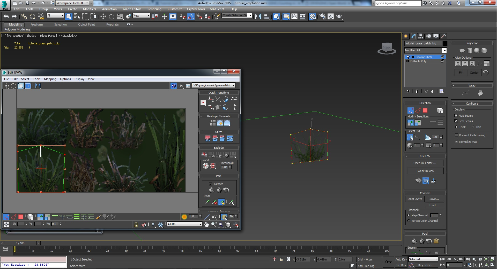
Рис5: Расположите UV-развертки полигонов так, чтобы они соответствовали одной из текстур травы. - Используя эту настройку, продублируйте полигоны и распределите их по области, которую вы хотите покрыть патчем. Примените случайное вращение и масштабирование к патчу, чтобы нарушить однородность объекта (убедитесь, что вы не переусердствовали, иначе текстуры могут начать растягиваться).
- Постарайтесь получить грубую шестиугольную форму для всего участка. Это работает лучше всего в большинстве ситуаций.
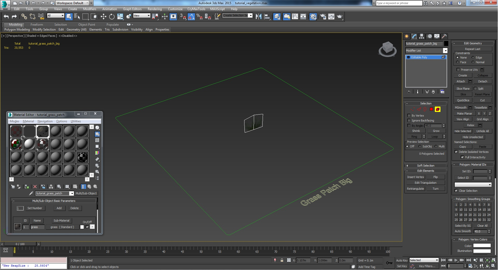
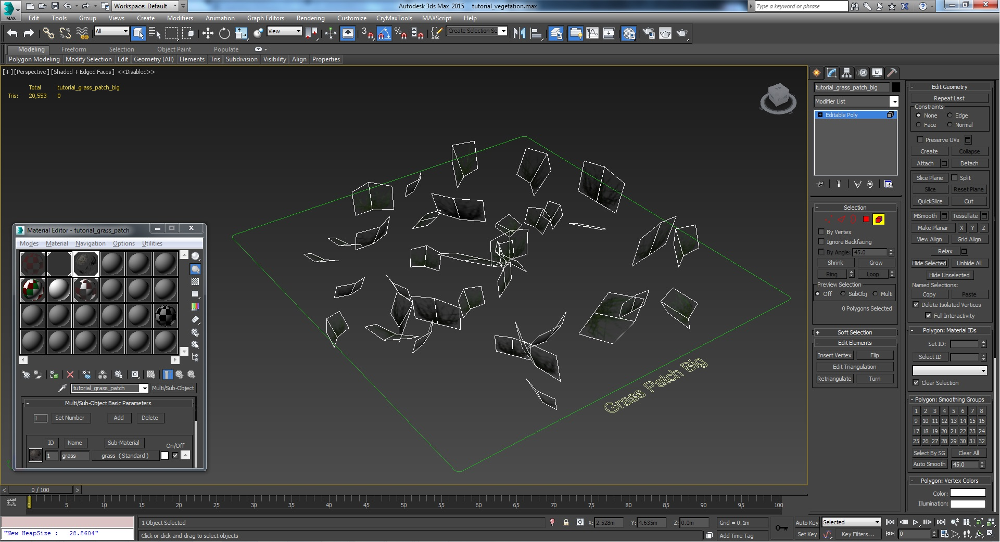
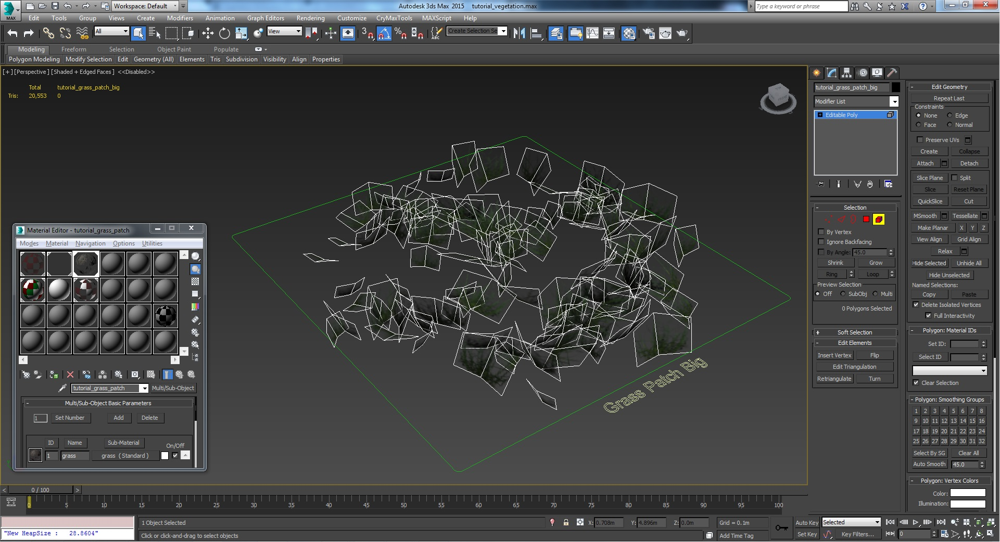
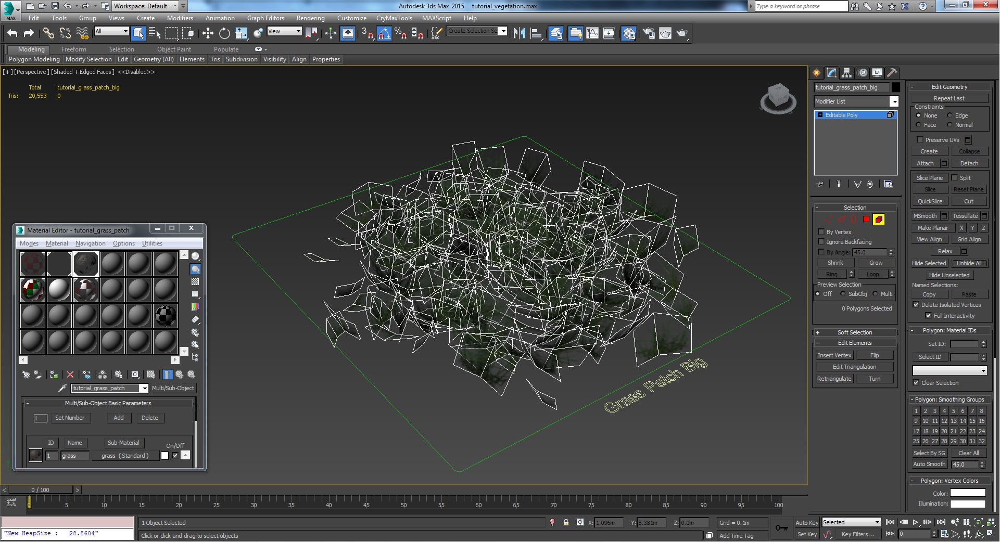
Рис. 6, 7, 8, 9: Пример построения геометрии участка с травой. - После завершения распределения геометрии соедините все отдельные плоскости в один базовый объект (tutorial_grass_patch).
Настройка положения точки поворота
Убедитесь, что ось объекта находится примерно в центре и немного выше абсолютного низа объекта. Это небольшое вертикальное смещение поворотной точки позволяет слегка утопить геометрию в пол, что полезно при выравнивании в соответствии с функцией ландшафта в редакторе растительности. При таком использовании он будет усредняться (насколько это возможно), чтобы соответствовать изменениям высоты местности. Это помогает избежать зазора под травой и предотвращает ее плавание в пространстве.
Убедитесь, что вы не установили точку поворота слишком высоко, иначе вы потеряете нижнюю часть геометрии в ландшафте.
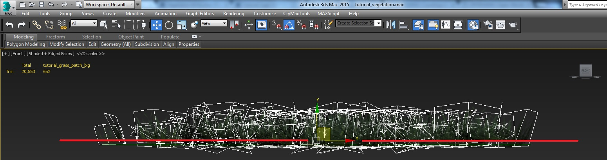
Рис. 10: Расположение точки поворота немного выше основания объекта.
Применить цвет вершин (для управления деформацией вершин материала)
Это дополнительная функция, которую можно применить к активу. Это не требуется, если вы не используете актив с определенной настройкой материала, например с деформацией вершин. Без раскраски вершин в ресурсе упрощенное движение, которое вы получаете при использовании деформации вершин, выглядит следующим образом: применяется по всей геометрии.
По умолчанию цвет вершин ассета белый (полное движение), но когда вы применяете черный цвет к базовым вершинам (там, где трава будет приросла к полу), тогда будут двигаться только кончики травы (поскольку они окрашены в белый цвет). Это дает гораздо более реалистичный и правдоподобный вид.
В отличие от параметра изгиба, который можно применить в редакторе растительности, он автоматически фиксирует основание травы на полу. Цвет вершин используется для управления движением, когда вы применяете движение посредством деформации вершин внутри материала.
Внутри 3dsMax настройте актив для отображения цветов вершин. Щелкните правой кнопкой мыши по модели и выберите Свойства объекта. Установите флажок, чтобы отобразить отображение канала вершин, и убедитесь, что цвет вершин выбран из раскрывающегося списка.
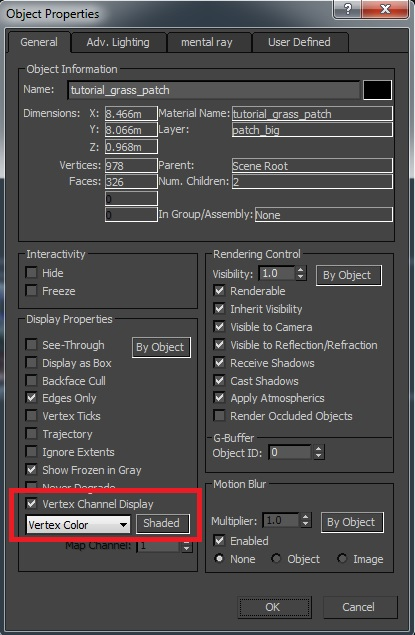
Рис.11: Включение отображения цвета вершин на активе.
Выбрав актив, добавьте в стек модификатор рисования вершин.
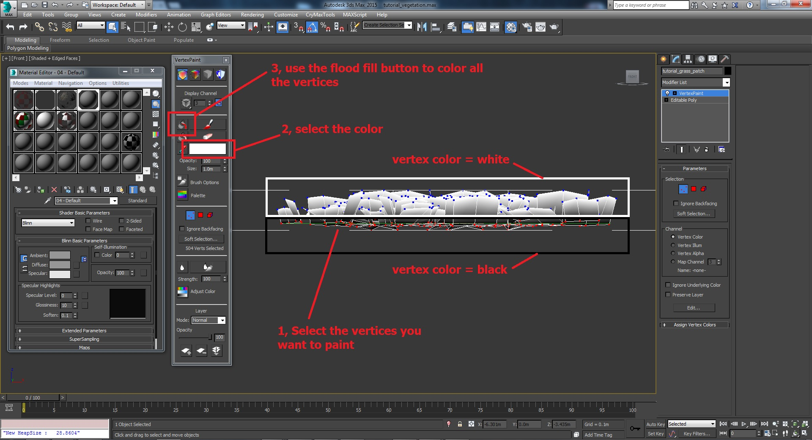
Рисунок 12: Примените цвета вершин: черный = отсутствие движения, белый = максимальное движение.
Процесс применения цветов вершин:
- Примените материал по умолчанию, чтобы лучше видеть (необязательно).
- Добавьте к объекту модификатор рисования вершин.
- Выделите все нижние вершины в Область просмотра.
- Выберите цвет нижних вершин (черный).
- Используйте Раскрасить все Кнопка, чтобы залить черным цветом выбранные нижние вершины.
- Свернуть стек модификаторов.
- Повторно примените правильный материал травы (если он был изменен).
Когда мы перейдем к части CRYENGINE этого руководства, мы продолжим рассмотрение вариантов использования цвета вершин внутри актива. А пока продолжайте создавать остальную часть актива.
Добавьте немного LOD в траву
Несмотря на то, что этот объект травы имеет очень простую геометрию и в общей сложности содержит более 600 полигонов, все же имеет смысл добавить к объекту LOD, чтобы мы могли потерять некоторые лишние полигоны на расстоянии.
Чтобы добавить LOD, убедитесь, что установлены следующие правила:
- Используйте префикс $LOD к имени LOD (например, $LOD1, $LOD2 и т. д.). Соглашение об именах $LODxxx, позволяющее сообщить движку, что это LOD.
- Постарайтесь уменьшить количество полигонов примерно на 50 % за шаг LOD (если возможно), сохраняя при этом общую форму.

Рис13: Обзор сети LOD.
В этом примере мы используем два LOD для этого актива. Соглашение об именах и количество полигонов следующие.
| Имя | LOD | Описание | Количество полигонов |
|---|---|---|---|
| tutorial_grass_patch | ЛОД0 | Основная сетка, которую вы увидите вблизи | 652 |
| $LOD1_tutorial_grass_patch | ЛОД1 | Первый LOD | 412 |
| $LOD2_tutorial_grass_patch | ЛОД2 | Второй LOD | 212 |
Обратите внимание, что при уменьшении цепочки LOD количество полигонов уменьшается примерно на 50%. Это несложное правило, но мы рекомендуем вам стремиться к этому уровню оптимизации при переключении LOD. Конечно, количество полигонов, которые вы можете безопасно удалить, не разрушая внешний вид актива, зависит от каждого актива.
Когда вы связываете LOD с родительским объектом (фиктивным помощником или, в данном случае, с основной сеткой), все LOD должны подключаться непосредственно к родительскому объекту.
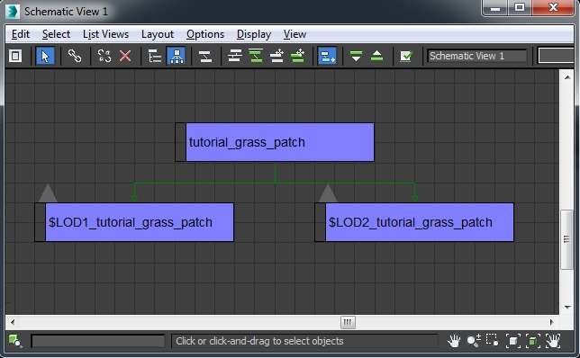
Рис14: Схематическое изображение иерархии, в которой все LOD являются братьями и сестрами друг друга и связаны с родителем.
Экспортируйте геометрию
Теперь мы готовы экспортировать нашу геометрию в движок.
В 3dsMax перейдите на 6-ю вкладку (Утилиты) и в экспортере CRYENGINE:
- Добавьте корневой узел геометрического ресурса в список экспорта (в данном случае он называется «tutorial_grass_patch").
- Выберите «Геометрия (*.cgf)» в Формат экспорта выпадающий список.
- Нажмите кнопку Экспорт узлов кнопка.
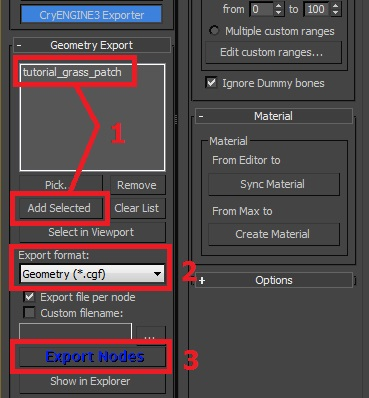
Рис15: Экспорт актива.
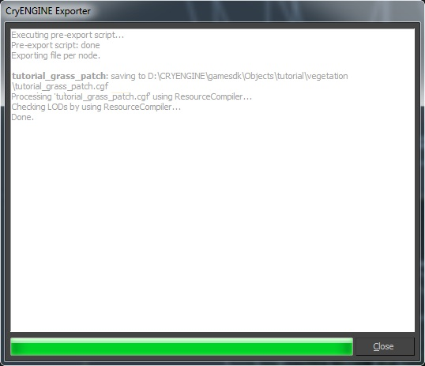
Рис16: Журнал успешного экспорта.
Продолжить CRYENGINE
Мы завершили настройку 3dsMax части руководства. Чтобы продолжить, перейдите на следующую страницу, где мы настраиваем материал и используем редактор растительности, чтобы разместить некоторые ресурсы травы.